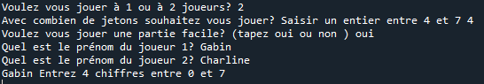
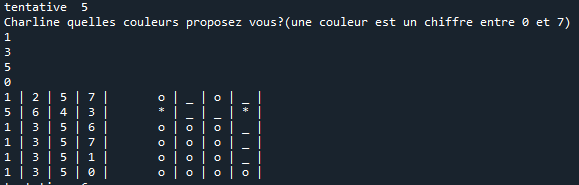
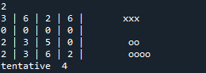

Première version "simple" du jeu à un joueur
La base utilisée est un TD partagé par Mme ZAOUCHE : TD : Des petits jeux.
- 1 joueur, 8 couleurs possibles, combinaison de 5 éléments ;
- l'ordinateur génère une combinaison secrète ;
- le joueur tente de la trouver en moins de 10 essais avec les indications donnés par l'ordinateur sur le nombre de couleurs bien placées et le nombre de couleurs mal placées.
Version "facile" du jeu
L'ordinateur indique pour chaque proposition du joueur les positions des couleurs mal placées et celles des couleurs bien placées.
Voir le code Python : Version facile
Variantes du jeu
On peut choisir certains paramètres comme :
- le nombre de joueurs (1 ou 2) ;
- le nombre de couleurs utilisées (4 à 10) ;
- la longueur de la combinaison à trouver.
Quelques copies d'écran
Version deux joueurs (facile):

Version deux joueurs mode jeu (facile) :

Version deux joueurs mode jeu (difficile) :
